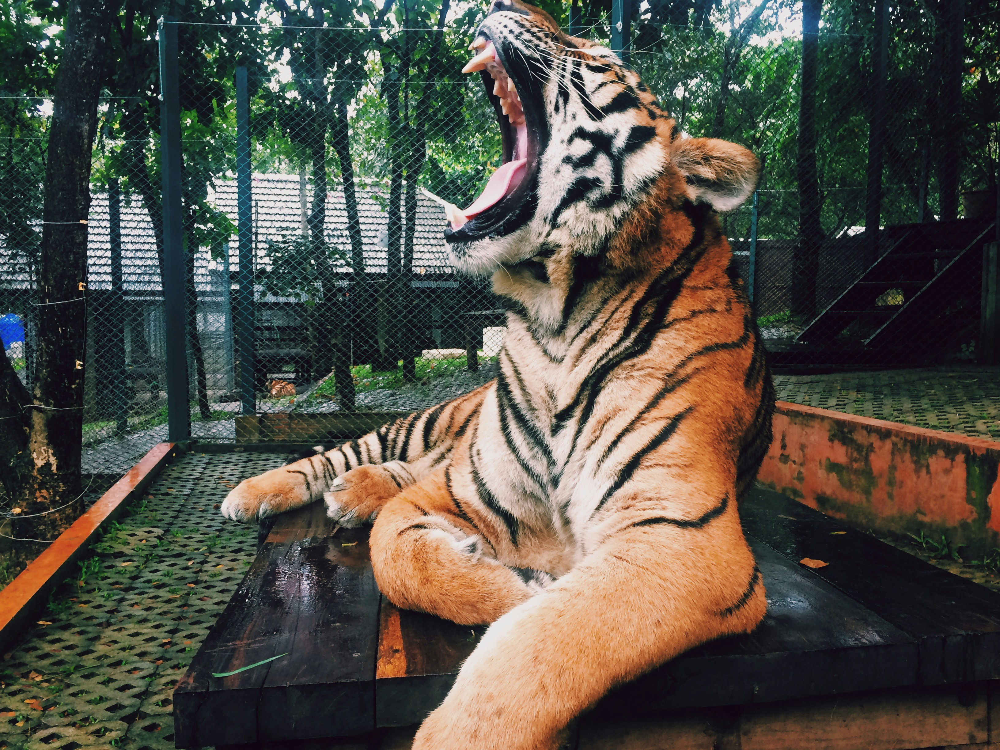
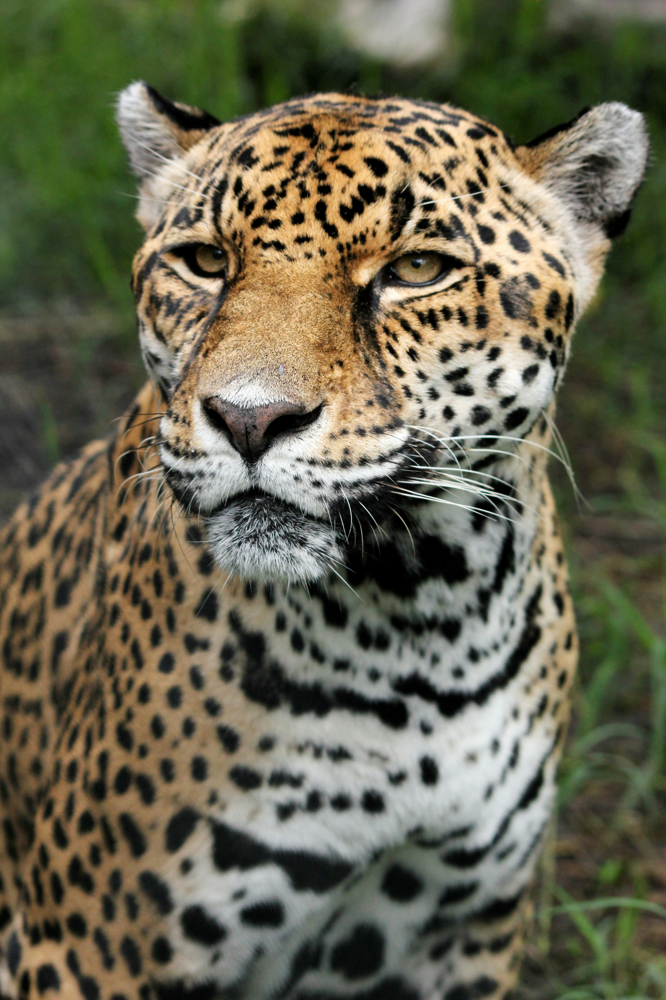

Les félins

Tigre de bengale
C'est un félin qui vie dans une forêt dense, on peut en trouver en Inde centrale, en Birmanie et au Népal.

Léopard
Félin solitaire et opportuniste, le léopard est largement distribué en Afrique et en Asie du Sud-Est sur de nombreux types d'habitats.

Lion
Est une espèce de mammifères carnivores de la famille des Félidés, sa masse varie selon les zones géographiques où il se trouve, allant de 145 à 180 kg pour les lions d'Asie à plus de 225 kg pour les lions d'Afrique.